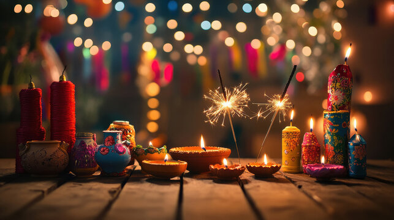
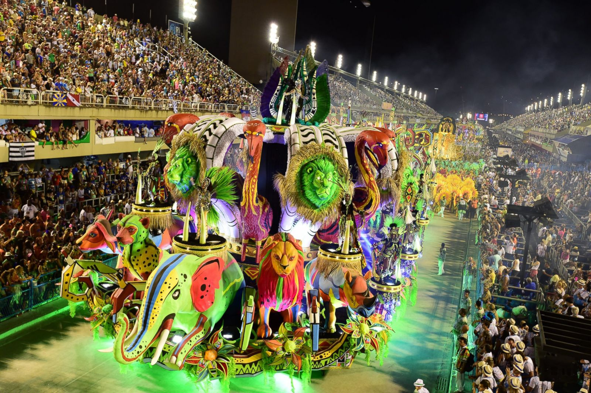
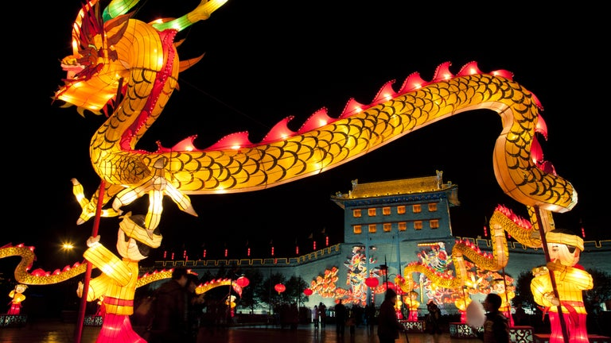
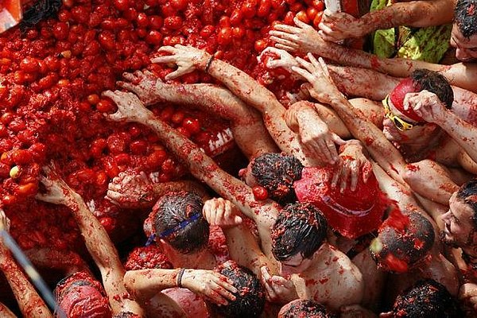
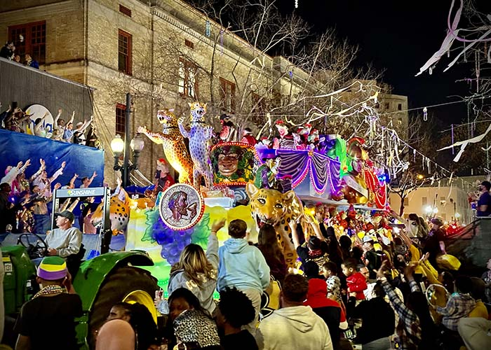
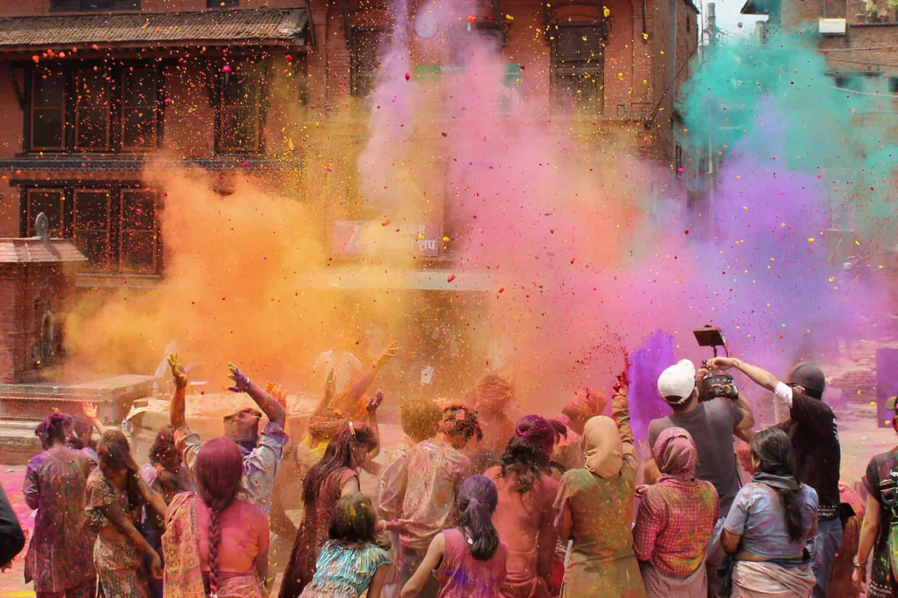
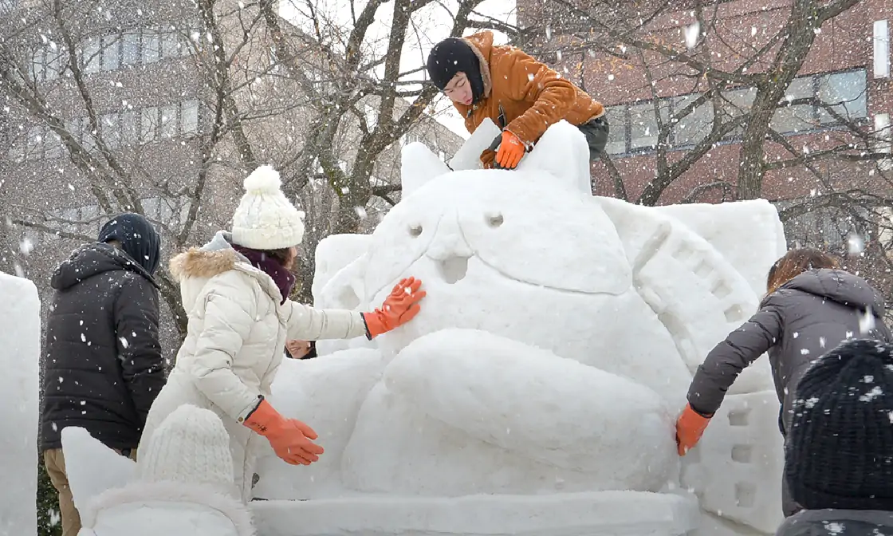
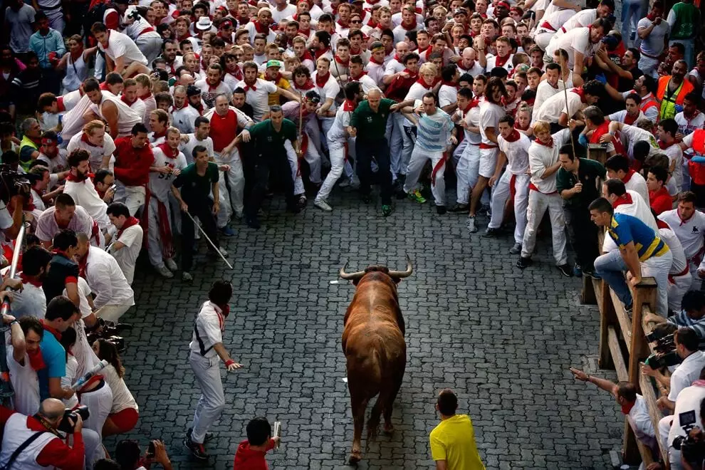

Local Festivals
Immerse yourself in the world's most vibrant cultural celebrations
The History of Cultural Festivals
Cultural festivals have been a cornerstone of human socialization since antiquity. Originating as religious rites, agricultural markers, or communal feasts, they served to unite societies and provide shared meaning. In ancient Greece, the Pythian and Olympic Games merged competition with religious festivity, while Roman Saturnalia and seasonal harvest celebrations marked the agricultural calendar. These gatherings allowed communities to express collective identity, share resources, and preserve folklore through oral storytelling, music, and dance.
In the modern era, festivals have evolved into global celebrations that promote cultural exchange, artistic expression, and international tourism. From ancient religious holidays like Diwali and Holi to massive performance arts gatherings like the Edinburgh Fringe, festivals remain a vital space for creative expression and community bonding. They offer travelers an unparalleled window into local traditions, showcasing the music, clothing, culinary arts, and values that define diverse cultures around the globe.
10 Spectacular Global Festivals

1. Diwali (India)
Season: Autumn (Oct - Nov) | Location: India
Diwali, the Festival of Lights, celebrates the victory of light over darkness and good over evil. Homes are decorated with clay lamps (diyas), floors are adorned with colorful patterns (rangoli), and families gather to share sweets, offer prayers, and set off vibrant fireworks.
Tap for Location (Jaipur, India)
2. Carnival (Rio de Janeiro, Brazil)
Season: Before Lent (Feb - Mar) | Location: Rio de Janeiro, Brazil
Rio's Carnival is the biggest and most famous festival in the world. Known for its explosive energy, elaborate float parades, synchronized samba dancers, and dazzling sequin-clad costumes, the city becomes a massive, nonstop street party celebrating Brazilian culture.
Tap for Location (Sambadrome, Rio)
3. Oktoberfest (Munich, Germany)
Season: Autumn (Sep - Oct) | Location: Munich, Germany
Oktoberfest is the world's largest Volksfest (beer festival and traveling funfair). Celebrating Bavarian heritage, millions of visitors gather in massive tents to enjoy traditional folk music, wear Dirndl and Lederhosen, and feast on pretzels, sausages, and local beer.
Tap for Location (Theresienwiese, Munich)
4. Chinese New Year (China)
Season: Winter/Spring (Jan - Feb) | Location: China
Also known as the Spring Festival, Chinese New Year marks the turn of the traditional lunisolar calendar. Celebrations include family reunion dinners, giving red envelopes filled with money, lighting firecrackers, and watching spectacular lion and dragon dances.
Tap for Location (Beijing, China)
5. La Tomatina (Buñol, Spain)
Season: Late August | Location: Buñol, Spain
La Tomatina is a food fight festival held in the Valencian town of Buñol. Thousands of participants from all over the globe gather to throw overripe tomatoes at each other in the streets, turning the entire town red in an hour of pure, chaotic fun.
Tap for Location (Buñol, Spain)
6. Mardi Gras (New Orleans, USA)
Season: Before Lent (Feb - Mar) | Location: New Orleans, Louisiana
Mardi Gras in New Orleans is an iconic carnival celebration characterized by spectacular parades organized by social clubs (krewes). Spectators line the streets to catch thrown plastic beads, doubloons, and toys amidst music, costumes, and dancing.
Tap for Location (French Quarter, NOLA)
7. Holi (India)
Season: Spring (March) | Location: India
Holi, the Festival of Colors, celebrates the end of winter, the arrival of spring, and the triumph of good over evil. Revelers smear colorful powders (gulal) and splash colored water on friends and strangers alike, dancing together in open streets.
Tap for Location (Mathura, India)
8. Sapporo Snow Festival (Sapporo, Japan)
Season: Winter (February) | Location: Sapporo, Japan
The Sapporo Snow Festival is a magical winter event featuring hundreds of stunning, giant snow and ice sculptures. Illuminated beautifully at night, the event attracts millions of visitors to see historic buildings and pop-culture icons rendered in ice.
Tap for Location (Odori Park, Sapporo)
9. The Running of the Bulls (Pamplona, Spain)
Season: Mid-July | Location: Pamplona, Spain
A key event of the San Fermín festival, the Running of the Bulls involves hundreds of people running in front of six loose bulls through the narrow, cobbled streets of Pamplona, ending at the historic city bullring amid massive street parties.
Tap for Location (Pamplona, Spain)
10. Edinburgh Festival Fringe (Edinburgh, Scotland)
Season: Late August | Location: Edinburgh, Scotland
The Fringe is the world's largest arts and media festival. For three weeks, Scotland's capital is taken over by thousands of performers showcasing theater, stand-up comedy, street performances, opera, and dance in hundreds of venues across the city.
Tap for Location (Royal Mile, Edinburgh)